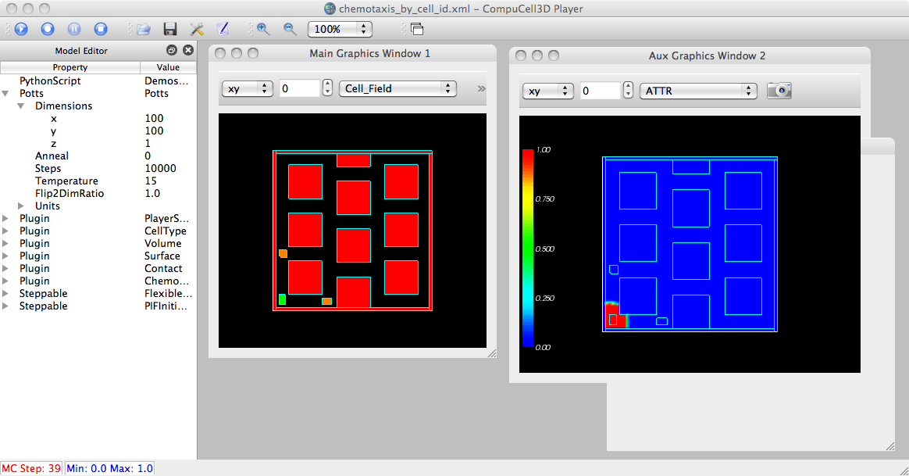
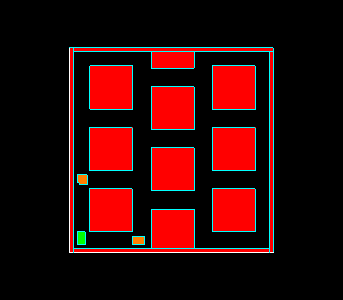
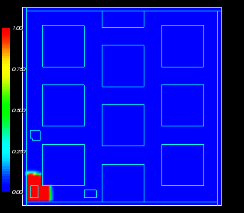

Michael reported a bug with trying to save images (on OSX) from multiple fields and getting distorted (striated) images.
From: Randy Heiland Subject: Re: Image Output From CC3D Date: September 28, 2011 3:24:44 PM EDT To: Rountree.Michael Cc: Maciej Swat, Benjamin Zaitlen
In player/Graphics/MVCDrawView2D.py (or 3D), I believe you can change the magnification amount from 1 to something larger in takeSimShot(), e.g.:
renderLarge = vtk.vtkRenderLargeImage()
renderLarge.SetInput(self.graphicsFrameWidget.ren)
renderLarge.SetMagnification(2)
and it should capture magnified .png images (but not with degraded image quality). I just tested on my Mac and it seemed to work. Unfortunately, this is not yet a parameter accessible from the GUI, nor can you provide non-integer magnification factors (at least that was my experience), nor can you specify different aspect ratios for the window size. Although, as we discussed via email back in April, I believe you could also experiment with the basic window size (and hence, aspect ratio) via player/Utilities/QVTKRenderWindowInteractor{_mac}.py: sizeHint()
-Randy
Hey Randy,
I've got most of it working now, but I have one error left that it pretty problematic. When I run the simulation and click the take snapshot button, everytime it tries to output a new image of the field, it screws up the screen while outputting the image, gives an error of unable to draw, and outputs the image in the original format that the player opens in instead of the larger format. I can live with the problem of the screen screwup. Though annoying it doesn't mess up the screenshot, however, I need to be able to resize the windows for a larger output format to be able to see higher resolution images.
July 2011: When outputting images using our mac server, if I run multiple simulations (I'll usually run 10), and if I am outputting images from several different gradients (FGF, BMP, etc), by using the "Take Screenshot" Button and allowing it to output at the defined intervals, then it will output very distorted images.They simply look like striations of color and are completely unrecognizable as anything. If I do the same thing on a windows system (for CPU limits I only run up to 4), I don't get any distortion. This is not model specific, it is entirely within the player, so any use case model can work
Note that our technique for saving images of Aux windows (i.e. when user clicks the camera icon in the graphics window) is less than ideal - creating an additional ("phantom") window - on Linux and OSX.

The saved images (.png's):


NOTE: for 3D sims, when a 2D slice in being displayed in an Aux window, the user MUST re-click the camera icon if the slice # has been changed. This will result in an appropriately named output directory for the saved images, e.g.: heiland@Macintosh-91:~/CC3DWorkspace/diffusion_fast_box_3D_xml_07_28_2011_10_00_45$ ls FGF_ConField_2D_XY_24/ diffusion_fast_box_3D_xml_00014.png diffusion_fast_box_3D_xml_00031.png FGF_ConField_2D_XY_27/ diffusion_fast_box_3D_xml_00015.png diffusion_fast_box_3D_xml_00032.png ...